AUTÓMATA 1200 - TEMARIO
 PRÁCTICAS
PRÁCTICAS
 Temario
Temario
 Capturas
Capturas  Enlaces
Enlaces
Virtual box
OPCIONES DE RED EN LAS MAQUINAS VIRTUALES.
De las configuraciones posibles vamos a utilizar tres: Adatador puente, NAT y no conectado
Adatador puente
En este modo de configuración la máquina virtual pasa a ser un equipo más dentro de la red local doméstica o profesional con su correspondiente MAC, dirección IP privada etc. obtendrá un direccionamiento IP desde el servidor DHCP que tengamos en la red local, y no desde el servidor DHCP del VirtualBox. La máquina virtual tendrá comunicación con el resto de equipos de la red local y con Internet.
Es la configuración para la comunicación con el autómata, debemos de poner la opción modo promiscuo en aceptar todo.
configuración -> Red-> adaptador puente – modo promiscuo = aceptar todo.
NOTA: La ip de la maquina virtua debe de ser única en la red
NAT
Cuando estamos en una configuración de NAT, la máquina virtual saldrá a la red local doméstica y a Internet utilizando la dirección IP del equipo real, por lo tanto, es como si el equipo real estuviera intercambiando tráfico.
En este modo de configuración, la máquina virtual puede comunicarse con cualquier equipo de la red local doméstica o profesional a la que el PC real tenga alcance. Si un equipo de la red local quiere comunicarse con la máquina virtual que hay funcionando, no podrá hacerlo, Salvo que se active la opción de «Reenvío de puertos».
No conectado.
Esta opción equivale a desconectar el cable de red de un ordenador, por la tanto no tendrá ningún tipo de comuncicación por red
Saber más en el siguiente enlace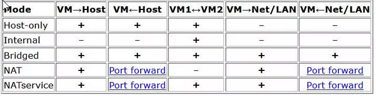
Cambiar la IP del ordenador
CAMBIAR IP DESDE LINEA DE COMANDOS
1. VER EL NOMBRE DE TU INTERFAZ DE RED
Antes de cambiar nada, necesitas saber cómo se llama tu adaptador:
Código
netsh interface ipv4 show interfaces
Busca algo como Ethernet, Wi-Fi, Conexión de área local, etc.
2. ASIGNAR UNA IP FIJA
Sustituye los valores por los que quieras usar:
Código
netsh interface ipv4 set address name="Ethernet" static 192.168.1.50 255.255.255.0 192.168.1.1
name → nombre del adaptador
192.168.1.50 → nueva IP
255.255.255.0 → máscara
192.168.1.1 → puerta de enlace
3. CONFIGURAR DNS MANUALMENTE
Sustituye los valores por los que quieras usar:
Código
netsh interface ipv4 set dns name="Ethernet" static 8.8.8.8
netsh interface ipv4 add dns name="Ethernet" 8.8.4.4 index=2
4. VOLVER A OBTENER IP POR DHCP
Si quieres que Windows vuelva a asignar la IP automáticamente:
Código
netsh interface ipv4 set address name="Ethernet" source=dhcp
netsh interface ipv4 set dns name="Ethernet" source=dhcp
5. CONOCER IP ACTUAL
Código
netsh interface ipv4 show address name="Ethernet"
Codigo para realizar un archivo bat y automatizar el proceso, debe de ejecutarse como administrador
CAMBIAR LA IP DESDE PANEL DE CONTROL (método clásico)
Pulsa Win + R
Escribe:
Código
ncpa.cpl
windows 7
windows->panel de control->Redes e internet-> En centro de recursos compartidos seleccionar (ver estado y tareas de red)-> cambiar opciones del adaptador y a partir de realizar igual que en windows XP
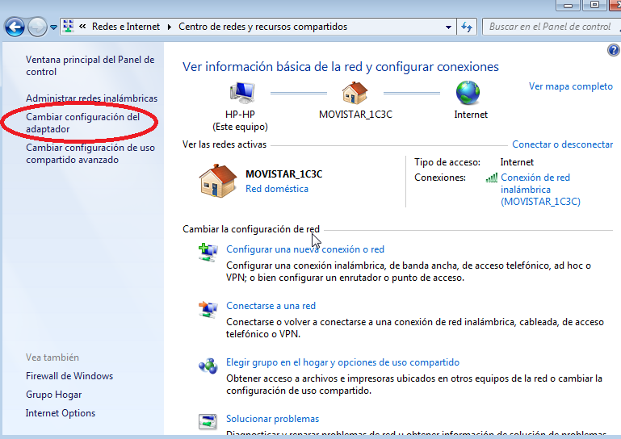
Iniciar un proyecto
- -Arrancar en vista proyecto
- -Nuevo proyecto
- -Seleccionar un autómata
- -Selección de dispositivos ON LINE
- -Módulos de ampliación
- -IP del proyecto
Arrancar en vista proyecto
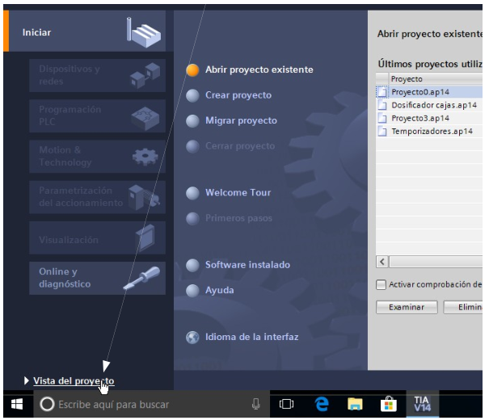
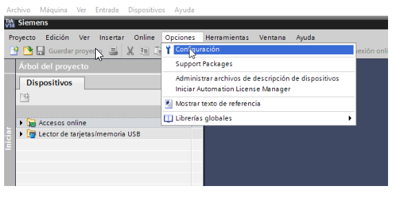
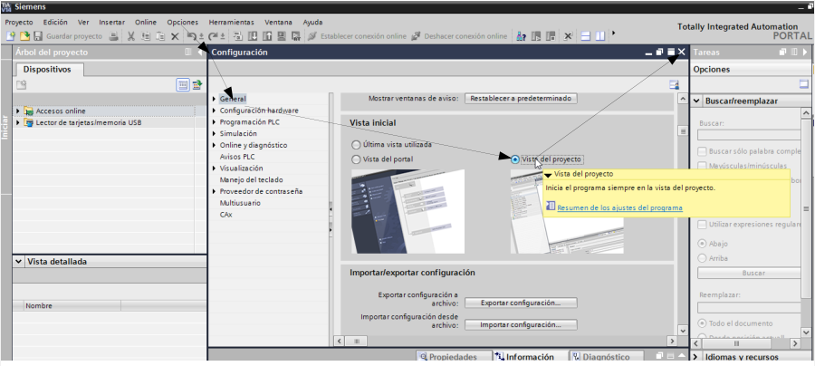
Selección autómata
Nuevo proyecto
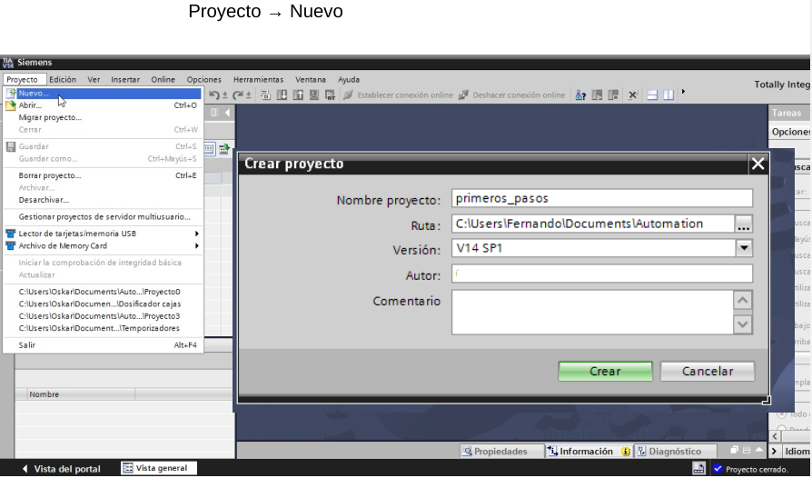
Seleccionar un autómata
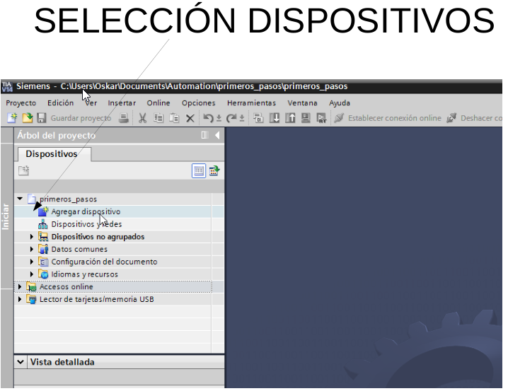
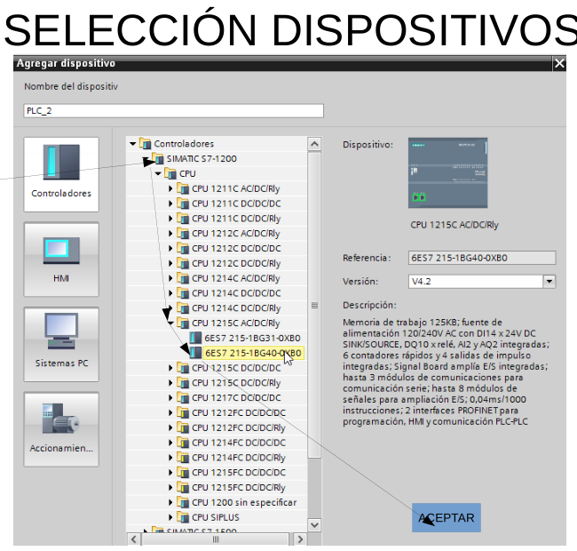
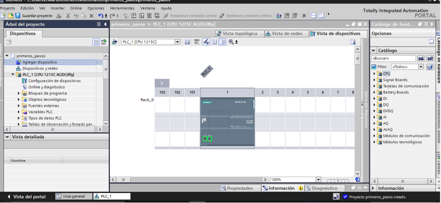
Selección dispositivos Online
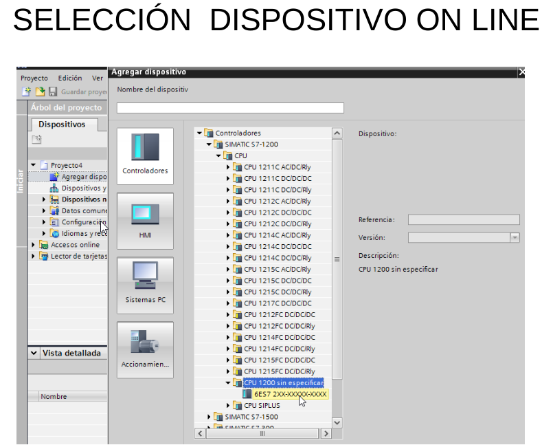
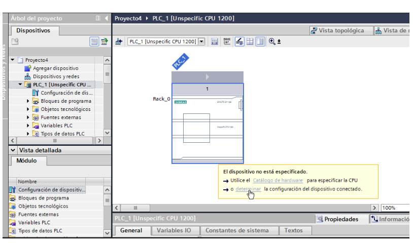
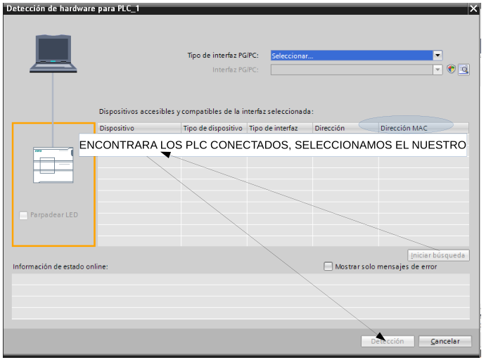
Módulos de amplilación
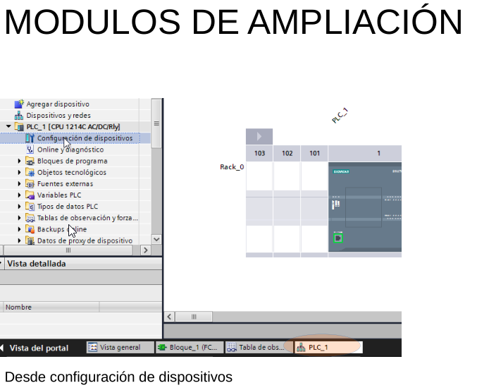
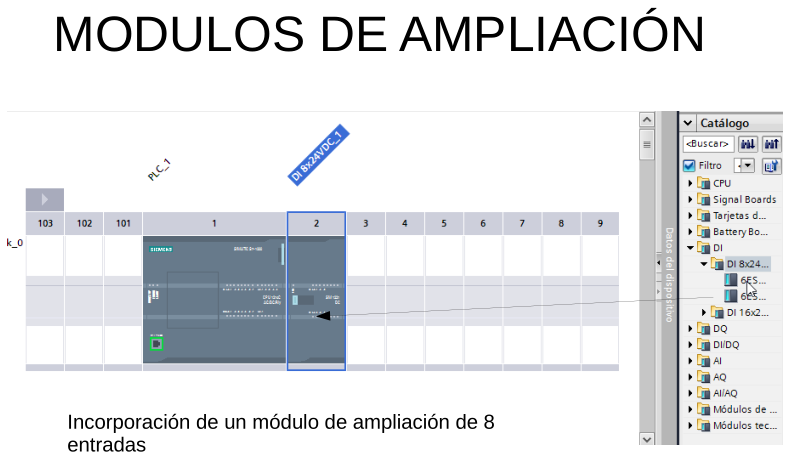
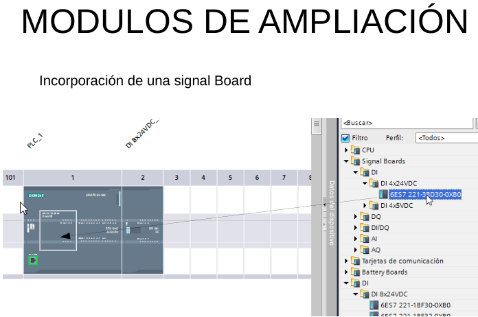
IP del proyecto
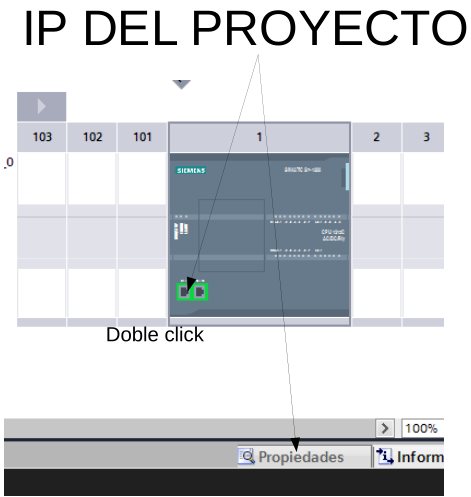
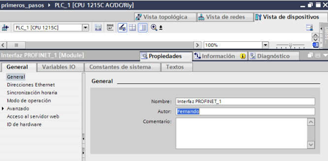
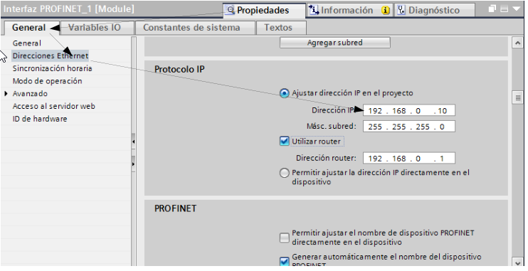
IP Autómata 1200
- -Cambiar IP del autómata
- -Localizar dispositivos
CAMBIAR IP DEL AUTÓMATA
Accesos online→ selecionamos nuestra tarjeta de red→ actualizamos→ y nos localiza los autómatas (pueden estar en con una IP que pertenezca a otra red, que TIA PORTAL los puede localizar.)→ online y diagnostico
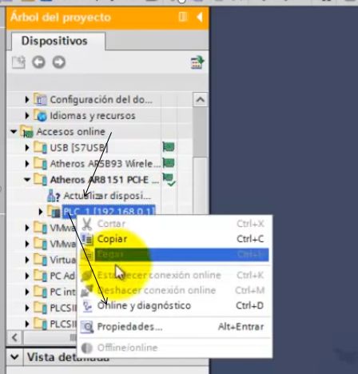
Y puedo ver la MAC del autómata, la dirección IP y si la puedo cambiar la IP del autómata, primero debemos de borrar la ip asignada
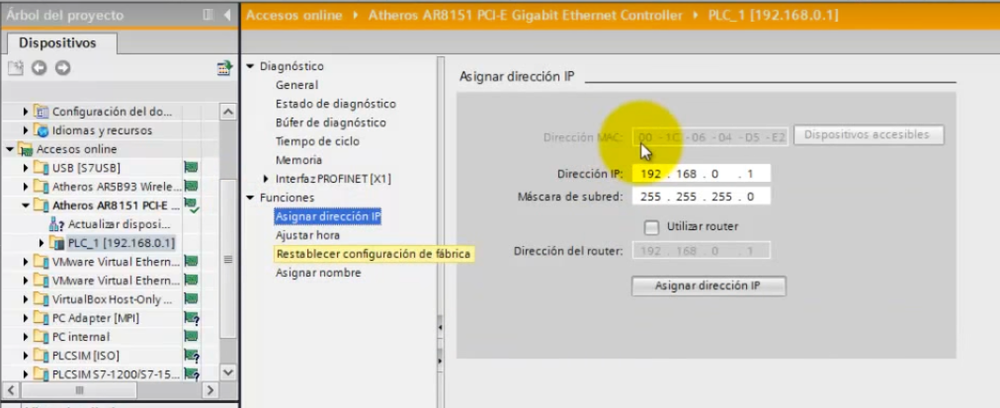
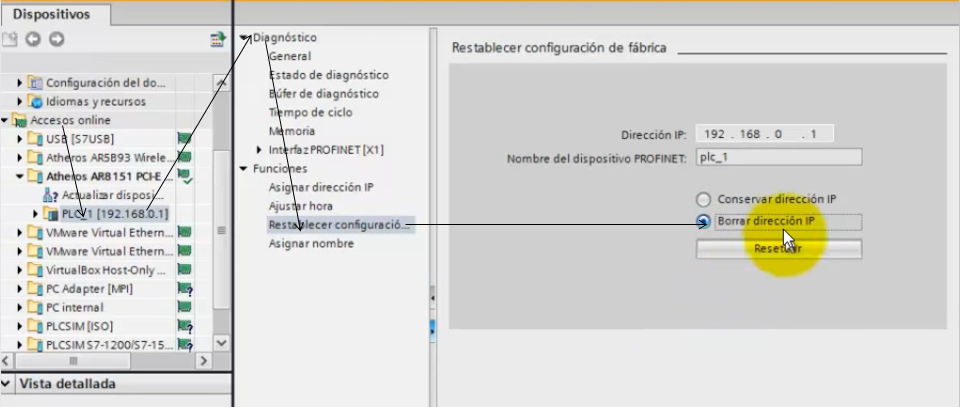
CAMBIAR IP DEL AUTÓMATA
Volvemos a actualizar los dispostivos accesibles y aparece la MAC del dipositivo que no tiene la IP
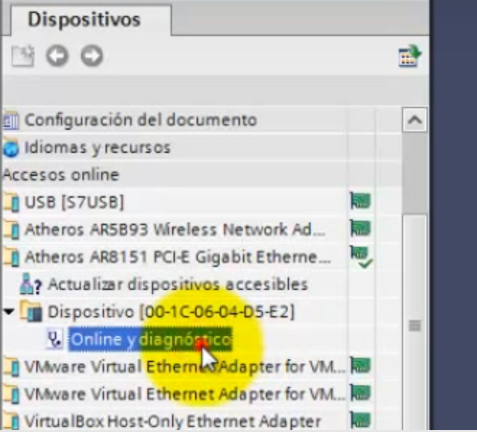
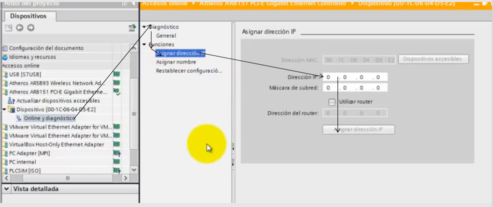
CAMBIAR NOMBRE DISPOSITIVO Y PARPADEO DESDE ACCESO ONLINE
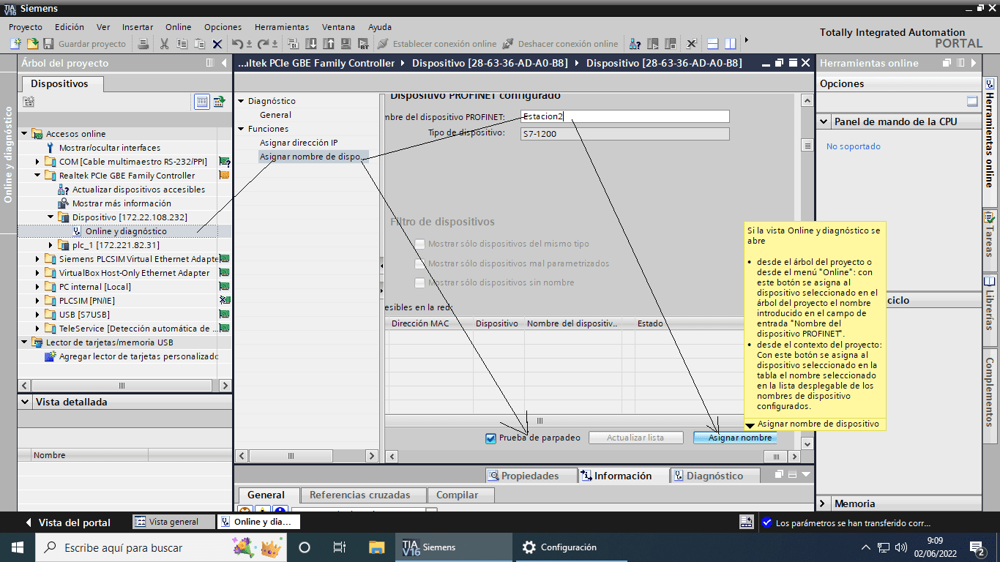
LOCALIZAR DISPOSITIVOS
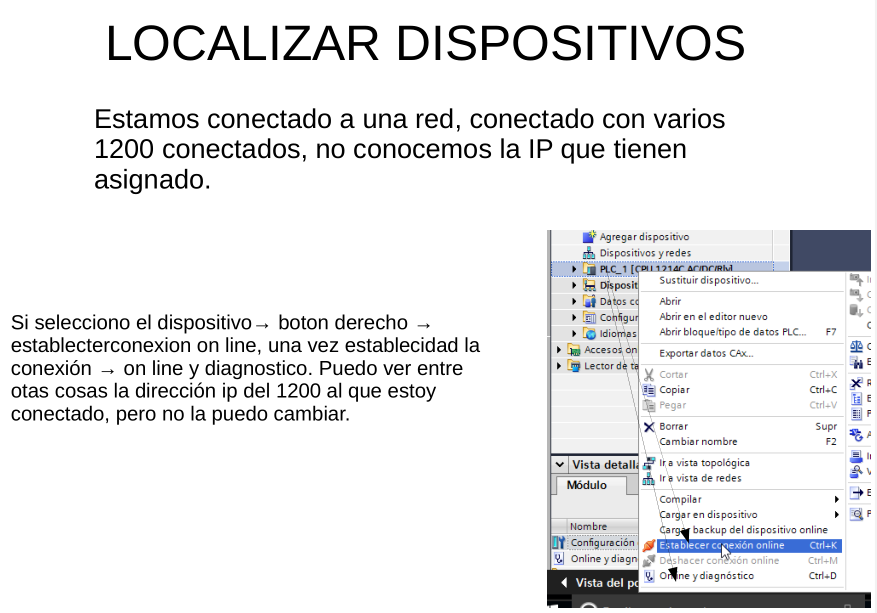
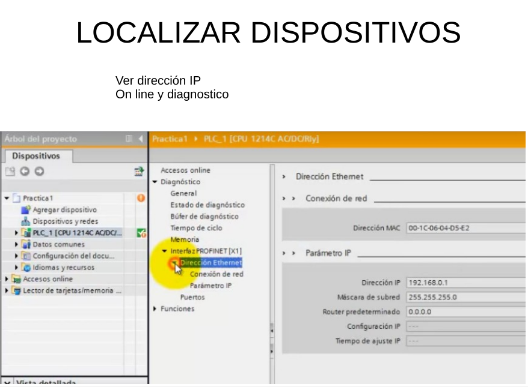
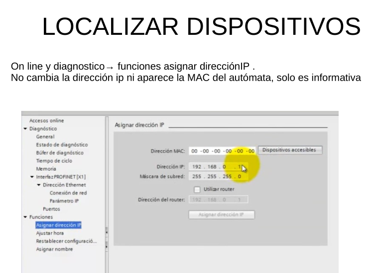
Guardar un programa
Al crear el proyecto le tenemos que dar el nombre del proyecto y la ruta donde le vamos a guardar, se creara una CARPETA con el nombre del proyecto y todos los archivos donde se almacenará todo la información del proyecto.
Una vez creado el programa, cuando quiera guardar modificaciones, click en proyecto y GUARDAR.
Si quiero cambiar el nombre del proyecto, click GUARDAR COMO, y se creara una carpeta nueva que incluye a todos los archivos necesarios con la información del proyecto.
Si quiero llevarlo a otro ordenador puedo hacerlo de distantas formas
- Llevar toda la carpeta.
- Llevar la carpeta comprimida con un compresor genérico.
- La MEJOR OPCIÓN Llevar la carpeta comprimida con la opción de archivar, creando un archivo comprimido, con extensión ZAP (versión del TIA PORTAL con el que se ha creado), ejemplo prueba.ZAP 16
Abrir el archivo en otro ordenador
- Si he llevado la carpeta comprimida con un compresor genénico, desmpimir el archivo en la carpeta donde guardamos los proyectos. Y desde proyecto -> abrir -> examinar-> busco la carpeta y click sobre el archivo con el logo del TIA PORTAL
- Si he llevado la carpeta sin comprimir, copiar la carpeta de nuestro proyecto en la carpeta donde guardamos los proyectos. Y desde proyecto -> abrir -> examinar-> busco la carpeta y click sobre el archivo con el logo del TIA PORTAL
- Si tengo el archivo comprimido con TIA PORTAL, Desde el programa Proyecto -> abrir-> click en examinar, y busco mi archivo-> lo selecciono y clik en abrir -> busco la carpeta done quiero guarda el proyecto SELECCIONAR CARPETA, y se descomprime mi proyecto en esa carpeta.
PLC Sim
Eliminar la contraseña y


Minimizamos el simulador y establecemos comunicación TIA portal con PLCSIM
Si cerramos la comunicación y queremos volver a establecerla, click en cargar en dispositivo y seleccionar PLCSIM


Seleccionar arrancar módulo


IO Factory
PREPARACIÓN TIA PORTAL
Preparamos el autómata para que pueda simular las entradas en factory IO
En configuración del disposito
botón derecho sobre el autómata -> propiedades
En la pestaña general
DI / DO-> direcciones entradas y salidas-> direcciones de entradas "memoria imagen de proceso" cambiarlo a NONE
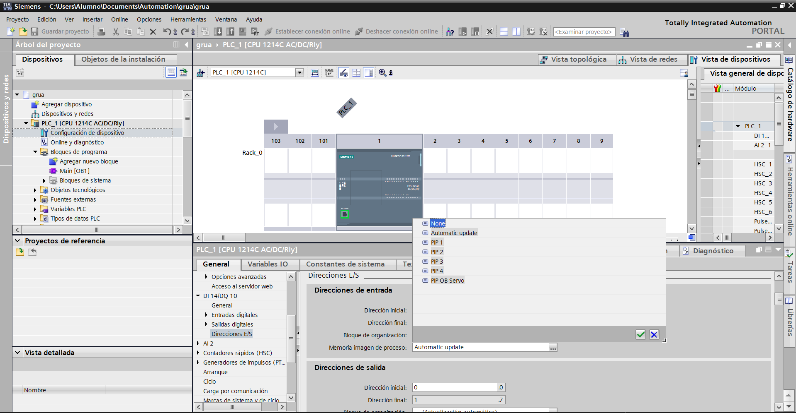
Template de Comunicación tia portal - factoryIO
Descargar la plantilla template de Factory IO para plc sim
Abrimos TIA portal y cargamos el proyecto template
Al cargar el proyecto template, inserta un autómata 1200, se crea un nuevo bloque, y en la primera linea del OB1 hace una llamada a un bloque, en ese bloque esta toda la programación para la comunicación con Factory IO.

Cambiamos el lenguaje de programacion de OB1 a KOP. (Boton derecho sobre ob1,propiedades y elegir kop)

Realizamos un programa "marcha paro de una cinta transportadora", que consiste en un pulsadormarcha (pulsador NA conectado a I0.0) un pulsador paro (pulsador de paro NC conectado a I0,1) y una cinta transportadora con un motor controlado por la salida Q0.0
Iniciamos simulación con PLC Sim
ya tenemos preparado el TIA PORTAL
INSTALAR TEMPLATE EN UN PROYECTO CREADO
Abrir el proyecto 2 "FactoryIO_Template_S7-1200_V15_V16.ap16" y actulizar o una plantilla actualizada a la versión 19.

Abrir un proyecto con tu autómata y el firmware que desees,
en VER activa la pestaña proyectos de referencia

Abre el proyecto de referencia "FactoryIO_Template_S7-1200_V16_V19.ap19" y cargalo

Desplegar el proyecto de referencia y copiar la función al diagrama de bloques de mi proyecto


Incorporamos el bloque función a la primera línea del OB1


FACTORY IO
Abrimos FACTORY IO
Vamos a crear una escena con una cinta transportadora, una caja, un cofre en el que colocamos un pulsador verde y otro rojo
Los objetos necesarios se arrastran desde el menú de la derecha, y para colocarlos, nos colocamos sobre el objeto, click botón derecho y nos aparecen unas opciones, entre la que destaco que con la tecla v pulsada puedo desplazar el objeto verticalmente

Mostrar etiqueta en el menú superior izquierdo

Cambiar nombre a las etiquetas

Conectar con TIA PORTAL
Una vez creada la escena, vamos a la pantalla ARCHIVO-> DRIVERS y seleccionamos PLC sim

Vemos el autómata en el medio,las entradas de mi estación a la izquierda y las salidas a la derecha
El número de entradas y salidas las podemos modificar en configuarión
ejemplo añadir 16 entradas digitales y 16 salidas digitales

Arrastramos las señales de nuestra instalación a lado de las entradas y salidas de nuestro autómata y pulsamos el botón conectar, si la conexión es correcta pasara el botón a estado desconectar y se activará el check verde

Volvemos al la pantalla principal, pulsamos en el triangulo play, y en TIA Portal podemos activar observación (gafitas)
Vemos en funcionamiento la simulación de nuestra escena y en TIA PORTAL vemos la activación y desactivación de las entradas al pulsar sobre los pulsadores de Factory IO y el funcionamiento del programa.

Comunicación PC y PLC
Comunicación PC y PLCDescarga de plantillas
Descarga de plantillas https://docs.factoryio.com/tutorials/siemens/setting-up-s7-plcsim-v13/#tia-portal-template-projects
Cambio de PLC


Para pasar un proyecto de un S7‑1200 a otro S7‑1200 dentro de TIA Portal, lo esencial es cambiar la CPU en la configuración de hardware y dejar que el proyecto se adapte automáticamente. El proceso es sencillo, pero hay varios puntos importantes para evitar errores de compatibilidad.
Pasos para cambiar la CPU S7‑1200 por otra S7‑1200
Abre el proyecto en TIA Portal.
En el árbol del proyecto, ve a:
Dispositivos y redes → [Tu PLC] → Configuración del dispositivo.
En la parte derecha, busca la opción:
“Reemplazar dispositivo” o “Cambiar dispositivo”.
Elige la nueva CPU S7‑1200 que vas a usar
(por ejemplo, cambiar de una 1212C a una 1214C, o de una versión V4.2 a V4.5).
TIA Portal te preguntará si quieres adaptar automáticamente el programa.
Acepta para que actualice bloques, direcciones y configuraciones.
Revisa:
Direcciones de entradas/salidas físicas (pueden cambiar según el modelo).
Módulos adicionales si los hay.
Firmware: la CPU nueva debe tener un firmware compatible con la versión del proyecto.
Compila el proyecto y descarga a la nueva CPU.
Cosas importantes a tener en cuenta
Si cambias a una CPU más pequeña, puede que falte memoria o no soporte algunas funciones.
Si cambias a una CPU más grande, normalmente no hay problema.
Si la CPU nueva tiene otro firmware, TIA puede pedirte actualizar el proyecto o la CPU.
Las direcciones de E/S integradas pueden variar entre modelos (1211, 1212, 1214…).
Verificación final
Después de reemplazar la CPU:
Compila todo el proyecto.
Abre “Dispositivos y redes” y revisa que no haya módulos en rojo.
Entra en “Monitorización online” para comprobar que las variables funcionan igual que antes.
Determinar un PLC comunicandose con él
Disponemos de un autómata cableado en red, no podemor comunicar con el aunque reste en otra red "IP", y poedemos ver la IP del PLC
Si estamos dentro de la misma red "IP" ademas podemos obtener información de sus caracteristicas y firmware


GRAFCET
Disponemos de un siguiente grafcet

OB100 de inicio, desactivamos todas las etapas y activamos la etapa inicial

FC Secuencial

FC acciones

OBmain. hacemos las llamadas a los FC secuencial y de acciones